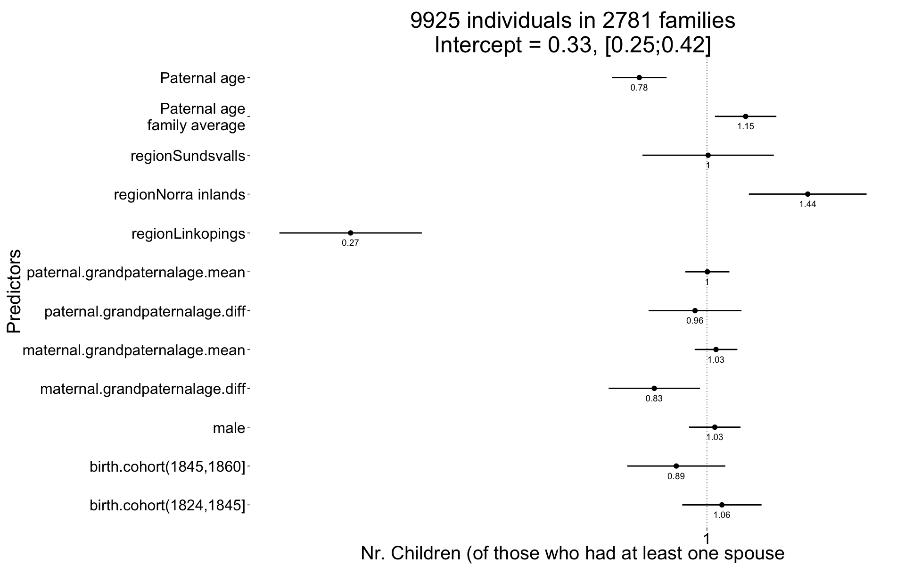
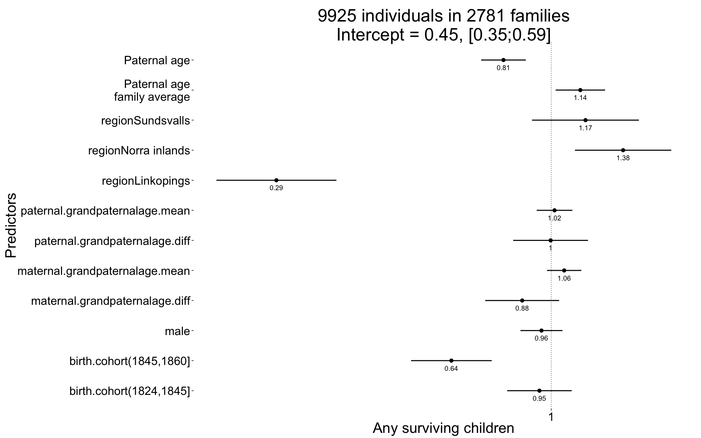

DDB grandpaternal age effects
Loading details
library(data.table); library(ggplot2); library(knitr); library(lme4);
opts_chunk$set(warning=TRUE, cache=TRUE,tidy=FALSE,autodep=TRUE,dev=c('png','pdf'),fig.width=20,fig.height=12.5,out.width='1440px',out.height='900px',cache.extra=file.info('ddb.rdata')[, 'mtime'])
source("0__helpers.R")
load("ddb.rdata")
ddb[,idPaternalGrandparents := paste(idPaternalGrandfather, idPaternalGrandmother)]
ddb[,idMaternalGrandparents := paste(idMaternalGrandfather, idMaternalGrandmother)]
ddb = recenter.pat(ddb, what = "paternal.grandpaternalage", among_who = "idPaternalGrandparents")
ddb = recenter.pat(ddb, what = "maternal.grandpaternalage", among_who = "idMaternalGrandparents")
ddb.with.paternalage = subset(ddb, subset = !is.na(paternalage) )
ddb.1 = subset(ddb.with.paternalage, subset = year(bdate) <= 1880 & year(bdate) >= 1737)
(quintiles = quantile(year(ddb.1$bdate), seq(0,1,by=0.2), na.rm=T))## 0% 20% 40% 60% 80% 100%
## 1737 1824 1845 1860 1872 1880quintiles[1]=quintiles[1]-1
ddb.1[, birth.cohort := cut(year(bdate),breaks = quintiles,dig.lab = 10)]Analysis description
Data subset
The ddb.1 dataset contains only those participants where paternal age is known, the birthdate is between 1760 and 1880 and the marriage is known (meaning we know when it started and how it ended by spousal death). In known marriages we can assume that missing death dates for the kids mean that they migrated out.
Model description
All of the following models have the following in common:
Optimizer settings
Bobyqa is fairly robust to convergence failures. In addition to using Bobyqa, we center some variables that otherwise lead to large eigenvalues.
control_defaults = glmerControl(optimizer = "bobyqa")Covariates
We control for birth.cohort (birth years in five equally large bins), male sex and region.
Model stratification
We added random intercepts for each family (father-mother dyad). We then controlled for the average paternal age in the family. Hence, the paternal age effects in the plot are split into those between families and those within families or between siblings. The relevant effect for our hypothesized mechanism, de novo mutations, is paternal age between siblings.
Episodes of selection
Here, episodes of selection refers to survival, mating success, reproductive success. To steer clear of sacrificial pseudo-replication, we make sure that each effect cannot be explained by the episode of selection preceding it. At its simplest, we check for effect on survival to reproduction only among those who lived to their first birthday. In later models, we look for an effect on number of children only among those who married and control their number of spouses.
Survival to first year
Survive_infancy = glmer(
survive1y ~ birth.cohort + male + region + paternalage.mean + paternalage.diff + maternal.grandpaternalage.diff + maternal.grandpaternalage.mean + paternal.grandpaternalage.diff + paternal.grandpaternalage.mean + (1|idParents) + (1|idPaternalGrandparents) + (1|idMaternalGrandparents),
data= ddb.1, control = control_defaults,
family='binomial' )
summary(Survive_infancy)## Generalized linear mixed model fit by maximum likelihood (Laplace
## Approximation) [glmerMod]
## Family: binomial ( logit )
## Formula: survive1y ~ birth.cohort + male + region + paternalage.mean +
## paternalage.diff + maternal.grandpaternalage.diff + maternal.grandpaternalage.mean +
## paternal.grandpaternalage.diff + paternal.grandpaternalage.mean +
## (1 | idParents) + (1 | idPaternalGrandparents) + (1 | idMaternalGrandparents)
## Data: ddb.1
## Control: control_defaults
##
## AIC BIC logLik deviance df.resid
## 32777 32932 -16370 32741 41526
##
## Scaled residuals:
## Min 1Q Median 3Q Max
## -3.975 0.264 0.316 0.381 1.389
##
## Random effects:
## Groups Name Variance Std.Dev.
## idParents (Intercept) 0.445 0.667
## idMaternalGrandparents (Intercept) 0.156 0.395
## idPaternalGrandparents (Intercept) 0.165 0.406
## Number of obs: 41544, groups:
## idParents, 9504; idMaternalGrandparents, 6448; idPaternalGrandparents, 6325
##
## Fixed effects:
## Estimate Std. Error z value Pr(>|z|)
## (Intercept) 2.10672 0.09149 23.03 < 2e-16 ***
## birth.cohort(1824,1845] 0.35583 0.08672 4.10 4.1e-05 ***
## birth.cohort(1845,1860] 0.37201 0.08381 4.44 9.0e-06 ***
## birth.cohort(1860,1872] 0.24073 0.08452 2.85 0.00440 **
## birth.cohort(1872,1880] 0.24464 0.08660 2.82 0.00473 **
## male -0.19616 0.03069 -6.39 1.7e-10 ***
## regionLinkopings -0.25908 0.07563 -3.43 0.00061 ***
## regionNorra inlands -0.23706 0.05118 -4.63 3.6e-06 ***
## regionSundsvalls -0.42933 0.05295 -8.11 5.1e-16 ***
## paternalage.mean 0.11567 0.03517 3.29 0.00101 **
## paternalage.diff -0.27834 0.03123 -8.91 < 2e-16 ***
## maternal.grandpaternalage.diff -0.10289 0.05153 -2.00 0.04586 *
## maternal.grandpaternalage.mean 0.00995 0.02734 0.36 0.71589
## paternal.grandpaternalage.diff -0.02198 0.05221 -0.42 0.67377
## paternal.grandpaternalage.mean -0.02469 0.02717 -0.91 0.36349
## ---
## Signif. codes: 0 '***' 0.001 '**' 0.01 '*' 0.05 '.' 0.1 ' ' 1
##
## Correlation of Fixed Effects:
## (Intr) b.(182 b.(184 b.(186 b.(187 male rgnLnk rgnNri
## b.(1824,184 -0.683
## b.(1845,186 -0.827 0.751
## b.(1860,187 -0.859 0.732 0.868
## b.(1872,188 -0.839 0.711 0.833 0.870
## male -0.190 0.002 0.001 0.004 0.004
## regnLnkpngs -0.362 0.028 0.159 0.198 0.204 0.006
## rgnNrrinlnd -0.517 0.096 0.234 0.276 0.259 0.008 0.411
## rgnSndsvlls -0.283 -0.028 0.002 0.029 0.020 0.008 0.336 0.477
## paternlg.mn 0.099 -0.011 -0.047 -0.088 -0.101 -0.003 -0.005 -0.123
## patrnlg.dff 0.122 -0.008 -0.044 -0.132 -0.148 -0.005 -0.084 -0.074
## mtrnl.grndptrnlg.d 0.019 0.017 0.013 -0.015 -0.032 0.008 -0.024 -0.009
## mtrnl.grndptrnlg.m -0.049 0.020 0.030 0.040 0.047 0.004 0.034 -0.019
## ptrnl.grndptrnlg.d 0.048 0.005 -0.003 -0.035 -0.051 -0.004 -0.037 -0.028
## ptrnl.grndptrnlg.m -0.045 0.018 0.029 0.044 0.055 0.000 0.023 -0.023
## rgnSnd ptrnlg.m ptrnlg.d mtrnl.grndptrnlg.d
## b.(1824,184
## b.(1845,186
## b.(1860,187
## b.(1872,188
## male
## regnLnkpngs
## rgnNrrinlnd
## rgnSndsvlls
## paternlg.mn 0.030
## patrnlg.dff -0.022 0.059
## mtrnl.grndptrnlg.d 0.000 0.025 0.040
## mtrnl.grndptrnlg.m 0.056 -0.014 -0.026 0.011
## ptrnl.grndptrnlg.d -0.006 0.084 0.049 -0.048
## ptrnl.grndptrnlg.m 0.028 -0.047 -0.026 0.019
## mtrnl.grndptrnlg.m ptrnl.grndptrnlg.d
## b.(1824,184
## b.(1845,186
## b.(1860,187
## b.(1872,188
## male
## regnLnkpngs
## rgnNrrinlnd
## rgnSndsvlls
## paternlg.mn
## patrnlg.dff
## mtrnl.grndptrnlg.d
## mtrnl.grndptrnlg.m
## ptrnl.grndptrnlg.d 0.000
## ptrnl.grndptrnlg.m -0.021 -0.004Survive_infancy_coefs = fortify_mine(Survive_infancy)
plot_fortified_mer(Survive_infancy_coefs, "Surviving infancy / first year")
Number of children who turn at least 5
Children <- glmer(
children.surviving5y ~ birth.cohort + male + region + paternalage.mean + paternalage.diff + maternal.grandpaternalage.diff + maternal.grandpaternalage.mean + paternal.grandpaternalage.diff + paternal.grandpaternalage.mean + (1|idParents) + (1|idPaternalGrandparents) + (1|idMaternalGrandparents) + (1|idIndividu),
data= ddb.1, subset = byear < 1850,
control = control_defaults, family='poisson' )
summary(Children)## Generalized linear mixed model fit by maximum likelihood (Laplace
## Approximation) [glmerMod]
## Family: poisson ( log )
## Formula:
## children.surviving5y ~ birth.cohort + male + region + paternalage.mean +
## paternalage.diff + maternal.grandpaternalage.diff + maternal.grandpaternalage.mean +
## paternal.grandpaternalage.diff + paternal.grandpaternalage.mean +
## (1 | idParents) + (1 | idPaternalGrandparents) + (1 | idMaternalGrandparents) +
## (1 | idIndividu)
## Data: ddb.1
## Control: control_defaults
## Subset: byear < 1850
##
## AIC BIC logLik deviance df.resid
## 32377 32500 -16172 32343 9908
##
## Scaled residuals:
## Min 1Q Median 3Q Max
## -0.762 -0.477 -0.354 0.210 0.797
##
## Random effects:
## Groups Name Variance Std.Dev.
## idIndividu (Intercept) 2.919 1.708
## idParents (Intercept) 0.182 0.426
## idMaternalGrandparents (Intercept) 0.232 0.482
## idPaternalGrandparents (Intercept) 0.280 0.529
## Number of obs: 9925, groups:
## idIndividu, 9925; idParents, 2781; idMaternalGrandparents, 2111; idPaternalGrandparents, 2084
##
## Fixed effects:
## Estimate Std. Error z value Pr(>|z|)
## (Intercept) -1.12152 0.13380 -8.38 < 2e-16 ***
## birth.cohort(1824,1845] 0.05439 0.07365 0.74 0.46019
## birth.cohort(1845,1860] -0.11154 0.09102 -1.23 0.22040
## male 0.02845 0.04781 0.60 0.55177
## regionLinkopings -1.29714 0.13222 -9.81 < 2e-16 ***
## regionNorra inlands 0.36685 0.10930 3.36 0.00079 ***
## regionSundsvalls 0.00423 0.12203 0.03 0.97233
## paternalage.mean 0.14089 0.05704 2.47 0.01351 *
## paternalage.diff -0.24622 0.05070 -4.86 0.0000012 ***
## maternal.grandpaternalage.diff -0.19170 0.08485 -2.26 0.02387 *
## maternal.grandpaternalage.mean 0.03299 0.03965 0.83 0.40536
## paternal.grandpaternalage.diff -0.04338 0.08630 -0.50 0.61519
## paternal.grandpaternalage.mean 0.00148 0.04092 0.04 0.97111
## ---
## Signif. codes: 0 '***' 0.001 '**' 0.01 '*' 0.05 '.' 0.1 ' ' 1
##
## Correlation of Fixed Effects:
## (Intr) b.(182 b.(184 male rgnLnk rgnNri rgnSnd
## b.(1824,184 -0.545
## b.(1845,186 -0.629 0.701
## male -0.173 -0.001 -0.013
## regnLnkpngs -0.636 0.130 0.292 -0.020
## rgnNrrinlnd -0.819 0.206 0.366 -0.014 0.686
## rgnSndsvlls -0.551 0.001 0.087 0.000 0.534 0.639
## paternlg.mn 0.176 -0.076 -0.118 0.006 -0.067 -0.187 0.014
## patrnlg.dff 0.349 -0.138 -0.190 -0.014 -0.211 -0.262 -0.122
## mtrnl.grndptrnlg.d 0.088 0.008 -0.004 0.014 -0.071 -0.077 -0.057
## mtrnl.grndptrnlg.m -0.104 0.035 0.035 0.001 0.079 0.066 0.079
## ptrnl.grndptrnlg.d 0.119 -0.019 -0.032 -0.004 -0.091 -0.101 -0.059
## ptrnl.grndptrnlg.m -0.082 0.033 0.039 -0.007 0.054 0.045 0.041
## ptrnlg.m ptrnlg.d mtrnl.grndptrnlg.d mtrnl.grndptrnlg.m
## b.(1824,184
## b.(1845,186
## male
## regnLnkpngs
## rgnNrrinlnd
## rgnSndsvlls
## paternlg.mn
## patrnlg.dff 0.144
## mtrnl.grndptrnlg.d 0.002 0.013
## mtrnl.grndptrnlg.m -0.003 -0.019 0.024
## ptrnl.grndptrnlg.d 0.067 0.027 -0.054 0.003
## ptrnl.grndptrnlg.m 0.026 -0.017 -0.001 -0.023
## ptrnl.grndptrnlg.d
## b.(1824,184
## b.(1845,186
## male
## regnLnkpngs
## rgnNrrinlnd
## rgnSndsvlls
## paternlg.mn
## patrnlg.dff
## mtrnl.grndptrnlg.d
## mtrnl.grndptrnlg.m
## ptrnl.grndptrnlg.d
## ptrnl.grndptrnlg.m 0.026Children_coefs = fortify_mine(Children)
plot_fortified_mer(Children_coefs, "Nr. Children (of those who had at least one spouse")
Any surviving children
Any_surviving_children <- glmer(
any_surviving_children ~ birth.cohort + male + region + paternalage.mean + paternalage.diff + maternal.grandpaternalage.diff + maternal.grandpaternalage.mean + paternal.grandpaternalage.diff + paternal.grandpaternalage.mean + (1|idParents) + (1|idPaternalGrandparents) + (1|idMaternalGrandparents),
data= ddb.1, subset = byear < 1850,
family = 'binomial', control = control_defaults )
summary(Any_surviving_children)## Generalized linear mixed model fit by maximum likelihood (Laplace
## Approximation) [glmerMod]
## Family: binomial ( logit )
## Formula:
## any_surviving_children ~ birth.cohort + male + region + paternalage.mean +
## paternalage.diff + maternal.grandpaternalage.diff + maternal.grandpaternalage.mean +
## paternal.grandpaternalage.diff + paternal.grandpaternalage.mean +
## (1 | idParents) + (1 | idPaternalGrandparents) + (1 | idMaternalGrandparents)
## Data: ddb.1
## Control: control_defaults
## Subset: byear < 1850
##
## AIC BIC logLik deviance df.resid
## 11881 11996 -5924 11849 9909
##
## Scaled residuals:
## Min 1Q Median 3Q Max
## -1.679 -0.655 -0.458 0.930 3.357
##
## Random effects:
## Groups Name Variance Std.Dev.
## idParents (Intercept) 0.0712 0.267
## idMaternalGrandparents (Intercept) 0.2593 0.509
## idPaternalGrandparents (Intercept) 0.3464 0.589
## Number of obs: 9925, groups:
## idParents, 2781; idMaternalGrandparents, 2111; idPaternalGrandparents, 2084
##
## Fixed effects:
## Estimate Std. Error z value Pr(>|z|)
## (Intercept) -0.79256 0.13330 -5.95 0.0000000028
## birth.cohort(1824,1845] -0.05330 0.07448 -0.72 0.4742
## birth.cohort(1845,1860] -0.45169 0.09313 -4.85 0.0000012322
## male -0.04408 0.04848 -0.91 0.3633
## regionLinkopings -1.24360 0.13851 -8.98 < 2e-16
## regionNorra inlands 0.32542 0.11114 2.93 0.0034
## regionSundsvalls 0.15522 0.12338 1.26 0.2084
## paternalage.mean 0.13183 0.05709 2.31 0.0209
## paternalage.diff -0.21606 0.05162 -4.19 0.0000284210
## maternal.grandpaternalage.diff -0.13128 0.08531 -1.54 0.1238
## maternal.grandpaternalage.mean 0.05866 0.03968 1.48 0.1393
## paternal.grandpaternalage.diff -0.00255 0.08632 -0.03 0.9764
## paternal.grandpaternalage.mean 0.01513 0.04120 0.37 0.7134
##
## (Intercept) ***
## birth.cohort(1824,1845]
## birth.cohort(1845,1860] ***
## male
## regionLinkopings ***
## regionNorra inlands **
## regionSundsvalls
## paternalage.mean *
## paternalage.diff ***
## maternal.grandpaternalage.diff
## maternal.grandpaternalage.mean
## paternal.grandpaternalage.diff
## paternal.grandpaternalage.mean
## ---
## Signif. codes: 0 '***' 0.001 '**' 0.01 '*' 0.05 '.' 0.1 ' ' 1
##
## Correlation of Fixed Effects:
## (Intr) b.(182 b.(184 male rgnLnk rgnNri rgnSnd
## b.(1824,184 -0.557
## b.(1845,186 -0.637 0.695
## male -0.177 0.003 -0.009
## regnLnkpngs -0.644 0.134 0.296 -0.016
## rgnNrrinlnd -0.834 0.211 0.366 -0.011 0.670
## rgnSndsvlls -0.564 0.000 0.089 -0.003 0.523 0.646
## paternlg.mn 0.191 -0.086 -0.131 0.008 -0.072 -0.189 0.013
## patrnlg.dff 0.346 -0.141 -0.189 -0.009 -0.206 -0.264 -0.121
## mtrnl.grndptrnlg.d 0.087 0.005 -0.006 0.015 -0.070 -0.080 -0.059
## mtrnl.grndptrnlg.m -0.101 0.037 0.032 0.001 0.066 0.058 0.076
## ptrnl.grndptrnlg.d 0.125 -0.026 -0.039 -0.008 -0.089 -0.104 -0.059
## ptrnl.grndptrnlg.m -0.081 0.031 0.034 -0.002 0.047 0.044 0.042
## ptrnlg.m ptrnlg.d mtrnl.grndptrnlg.d mtrnl.grndptrnlg.m
## b.(1824,184
## b.(1845,186
## male
## regnLnkpngs
## rgnNrrinlnd
## rgnSndsvlls
## paternlg.mn
## patrnlg.dff 0.145
## mtrnl.grndptrnlg.d 0.004 0.010
## mtrnl.grndptrnlg.m 0.001 -0.015 0.021
## ptrnl.grndptrnlg.d 0.075 0.028 -0.062 0.000
## ptrnl.grndptrnlg.m 0.026 -0.015 0.003 -0.026
## ptrnl.grndptrnlg.d
## b.(1824,184
## b.(1845,186
## male
## regnLnkpngs
## rgnNrrinlnd
## rgnSndsvlls
## paternlg.mn
## patrnlg.dff
## mtrnl.grndptrnlg.d
## mtrnl.grndptrnlg.m
## ptrnl.grndptrnlg.d
## ptrnl.grndptrnlg.m 0.022Any_surviving_children_coefs = fortify_mine(Any_surviving_children)
plot_fortified_mer(Any_surviving_children_coefs, "Any surviving children")
Wrap up
Save coefficients
name = "ddb_grandparents"
save(list = lstype('confint.merMod'),file=paste0("coefs/",name,"_coefs.rdata"))
save(list = lstype(),file=paste0("coefs/",name,"_models.rdata"))Session Info
sessionInfo()## R version 3.1.3 (2015-03-09)
## Platform: x86_64-apple-darwin13.4.0 (64-bit)
## Running under: OS X 10.10.2 (Yosemite)
##
## locale:
## [1] en_US.UTF-8/en_US.UTF-8/en_US.UTF-8/C/en_US.UTF-8/en_US.UTF-8
##
## attached base packages:
## [1] grid graphics grDevices utils datasets stats methods
## [8] base
##
## other attached packages:
## [1] MCMCglmm_2.22 ape_3.2 coda_0.17-1 pipeR_0.6
## [5] htmltools_0.2.6 XML_3.98-1.1 gridSVG_1.4-3 extrafont_0.17
## [9] lmerTest_2.0-20 blme_1.0-2 lme4_1.1-7 Rcpp_0.11.5
## [13] Matrix_1.1-5 zoo_1.7-11 foreign_0.8-63 mgcv_1.8-4
## [17] nlme_3.1-120 haven_0.1.1.9000 QuantPsyc_1.5 MASS_7.3-39
## [21] boot_1.3-15 psych_1.5.1 Hmisc_3.15-0 Formula_1.2-0
## [25] survival_2.38-1 lattice_0.20-30 reshape2_1.4.1 lubridate_1.3.3
## [29] car_2.0-25 stringi_0.4-1 dplyr_0.4.1 pander_0.5.2
## [33] knitr_1.9 rmarkdown_0.5.1 plyr_1.8.1 ggplot2_1.0.0
## [37] formr_0.1.11 data.table_1.9.5 stringr_0.6.2 devtools_1.7.0
##
## loaded via a namespace (and not attached):
## [1] acepack_1.3-3.3 assertthat_0.1 bitops_1.0-6
## [4] caTools_1.17.1 chron_2.3-45 cluster_2.0.1
## [7] codetools_0.2-10 colorspace_1.2-5 corpcor_1.6.7
## [10] cubature_1.1-2 DBI_0.3.1 digest_0.6.8
## [13] evaluate_0.5.5 extrafontdb_1.0 formatR_1.0
## [16] formula.tools_1.3.4 gdata_2.13.3 gplots_2.16.0
## [19] gtable_0.1.2 gtools_3.4.1 KernSmooth_2.23-14
## [22] labeling_0.3 latticeExtra_0.6-26 lazyeval_0.1.10
## [25] magrittr_1.5 memoise_0.2.1 minqa_1.2.4
## [28] mnormt_1.5-1 munsell_0.4.2 nloptr_1.0.4
## [31] nnet_7.3-9 numDeriv_2012.9-1 operator.tools_1.3.0
## [34] parallel_3.1.3 pbkrtest_0.4-2 proto_0.3-10
## [37] quantreg_5.11 RColorBrewer_1.1-2 RJSONIO_1.3-0
## [40] rpart_4.1-9 Rttf2pt1_1.3.3 scales_0.2.4
## [43] SparseM_1.6 splines_3.1.3 tcltk_3.1.3
## [46] tensorA_0.36 tools_3.1.3date()## [1] "Mon Mar 30 19:40:47 2015"